LSBD Emergency Contact Information
- [Location] Chungwoon Mission Center, Philippines
*B47 L89 Grasse st, Open Space, The Riviera Estates, Silang, Cavite Philillines
- [Affiliated Church] Indang Chunwoon Church
- [Emergency Contact] Coordinator : +82-10-4142-4579
LSBD 비상 연락망
- [거주지] 필리핀 청운미션센터
*필리핀 실랑 리비에라 빌리지 내 위치
- [소속 교회] 인당청운교회
- [비상 연락망] 담당자 +8210-4142-4579